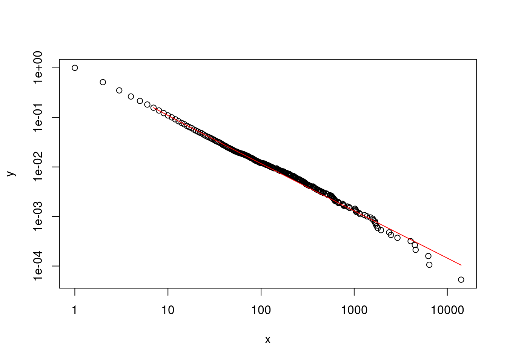

Chapter 16 Chapter 16: Analyzing degree distributions
Early work in the era of modern network science has revealed that the degree distributions of real-world networks followed a power-law (Barabasi & Albert, 2002). This was an important discovery because the fact that a power law could characterize the distribution of node degrees across a wide, diverse range of networks suggested that a common mechanism or organizing principle could be responsible for such a pattern. This led Barabasi and colleagues to propose a prominent model of network growth, known as preferential attachment, that provided a possible mechanism for the emergence of a power law degree distributions in networks.
However, we need to first understand two concepts before proceeding: degree distribution and power law.
Degree distribution refers to the probability distribution of node degrees in a given network. For instance, what proportion of nodes in the network have a degree of \(x\), where \(x\) represents various degree values in the network?
Power law is a class of long-tailed distributions where the relationship between two variables is best characterized by an exponent (power relation). If a degree distribution follows a power law, the relation between the probability distribution of node degrees and the value of the degree itself is characterized by an exponential function, as follows:
Where \(p(x)\) is the probability of \(x\) occurring in the dataset, \(C\) = a constant, \(\alpha\) = exponent or power of the relationship between \(x\) and \(p(x)\). The exponent is negative because it is a negative relationship: As \(x\) (node degree) increases, the probability (of it occurring) decreases. This mathematical relationship captures the idea that hubs (nodes with extremely high degree) are more uncommon in the network than nodes with lower degree.
In this Chapter, we will work through an example of how to analyze the distribution of a variable, and to statistically assess if its distribution is indeed similar to a power law distribution. The example is drawn from the tutorials provided by the creator of the poweRlaw R package, see the vignettes on https://cran.r-project.org/web/packages/poweRlaw/index.html for a more detailed walk through.
16.1 Set up
First, let’s make sure to download and then load the poweRLaw R package into our workspace.
For this example, we will use the Moby Dick data set provided in the poweRlaw package. The moby R object is a vector of numbers, which each number corresponds to the raw frequency count of words found in the novel Moby Dick. The vector is also organized from the most frequently occurring word, to the least frequently occurring word. Notice that the identity of the words was not provided in the vector, but usually function words are the most frequently words in language corpora (e.g., the, of, to, etc.). Finally, although the example is on word frequencies, the same procedure can be applied to any quantity, e.g. node degrees in the network.
## [1] 14086 6414 6260 4573 4484 4040## [1] 1 1 1 1 1 116.2 Fitting the power law distribution
Then, we run the following code to fit the data to a power law distribution and infer two key parameters, alpha and \(x_{min}\).
# assign a power law distribution "object" to the data
m_pl = displ$new(moby)
# infer parameters (alpha, minimum cut off)
est = estimate_xmin(m_pl)
est## $gof
## [1] 0.008252634
##
## $xmin
## [1] 7
##
## $pars
## [1] 1.952728
##
## $ntail
## [1] 2958
##
## $distance
## [1] "ks"
##
## attr(,"class")
## [1] "estimate_xmin"## Reference class object of class "displ"
## Field "xmin":
## [1] 7
## Field "pars":
## [1] 1.952728
## Field "no_pars":
## [1] 1The output looks a bit crazy! Let’s try to unpack it. The first output est contains the results of fitting the power law distribution to the word frequency data. $gof tells us the goodness of fit statistic as estimated from using the Kolmogorov-Smirnov test to measure the distance between the actual distribution and the fitted power law distribution. $pars is the alpha exponent of the power law distribution. $xmin tells us the cut off point at which the power law up to. You can think of this as the part of the distribution where there is a lot of jitter and noise (common in real world data) and the power law is not fitted to the data where \(x\) is less than that cut off. In the last part of the code, we plug these estimated values back into the power law object; this is to enable us to conduct statistical testing later on.
16.3 Visualization
We can also visualize the fitted power law distribution (in red; notice how the line does not continue beyond \(x_{min}\) < 7), plotted on log-log scale. The (negative) slope of the best-fit line corresponds to the alpha (exponent) parameter.

16.4 Statistical testing of distribution fit
16.4.1 Method 1: Bootstrapping the data
Because it is possible to fit a power-law distribution to any data set, Clauset et al. strongly recommend that we test whether the observed data set actually follows a power-law. The method used below follows Clauset et al.’s suggestion to test the null hypothesis (that the data came from a power law distribution) using a goodness-of-fit test with a bootstrapping procedure. The basic concept is to perform a hypothesis test by generating multiple data sets (with the previously estimated parameters \(x_{min}\) and alpha) and then “re-inferring” the model parameters. The original model parameter is then compared to the simulated set of parameters. If the p-value is greater than .05, we cannot reject the null hypothesis that the data could be generated from a power law distribution with similar parameters. If the p-value is less than .05, we reject the null hypothesis, and conclude that the data is not convincingly fit by a power law.
# parameter uncertainty and statistical testing
## 1000 bootstraps using four cores
bs_p = bootstrap_p(m_pl, no_of_sims = 1000, threads = 4, seed = 1) # can be slow## Expected total run time for 1000 sims, using 4 threads is 172 seconds.## gof xmin pars ntail
## 1 0.009839299 6 1.917765 3515
## 2 0.007466091 10 1.969352 2095
## 3 0.009205848 9 1.943017 2290
## 4 0.013751881 7 1.942744 2989
## 5 0.004895829 6 1.956929 3469
## 6 0.008659503 7 1.952541 2943## [1] 7.668## [1] 1.950474## [1] 3.341398## [1] 0.02341784# p-value
bs_p$p # null hypothesis: distribution came from a power law distribution, since p > 0.05, cannot reject the null ## [1] 0.69416.4.2 Method 2: Comparing alternative distributions
An alternative method is to fit other long-tailed distributions to the data, and then compare these distributions directly using a likelihood ratio test. The code below shows you how to compare the power law distribution to the log-normal distribution (although other long-tailed distributions can also be tested). Basically, there is a similar process of fitting the data to the new distribution and updating the parameters. Then the compare_distributions function is used to provide a likelihood ratio test comparing the two distributions. Since the test was not statistically significant, both distributions are equally far from the true distribution and hence it is not possible to determine which is the best fitting model.
# make a log-normal object for moby
# fix the xmin parameter to be the same as m_pl
m_ln <- dislnorm$new(moby)
m_ln$setXmin(7)
# estimate the parameters for log normal distribution
est <- estimate_pars(m_ln)
# update the parameters into the object
m_ln$setPars(est)
# use Vuong's test to compare PL vs LN distributions
comp <- compare_distributions(m_pl, m_ln)
comp$p_two_sided## [1] 0.677336616.5 Exercise
Analyze the degree distribution of the following network:
To get a vector of “degree counts” (c.f., word frequencies in Moby Dick), use the following code and see if this degree distribution follows a power law distribution using the bootstrapping approach.
16.6 References
For an example of how this approach has been used to explore the degree distributions of networks, see:
Siew, C. S. Q., & Vitevitch, M. S. (2020). Investigating the Influence of Inverse Preferential Attachment on Network Development. Entropy, 22(9), Article 9. https://doi.org/10.3390/e22091029
Clauset, A., Shalizi, C. R., & Newman, M. E. (2009). Power-law distributions in empirical data. SIAM Review, 51(4), 661–703.
Gillespie, C. S. (2015). PoweRlaw: Analysis of heavy tailed distributions. R Package Version 0.30. 0, URL Http://CRAN. R-Project. Org/Package= poweRlaw.